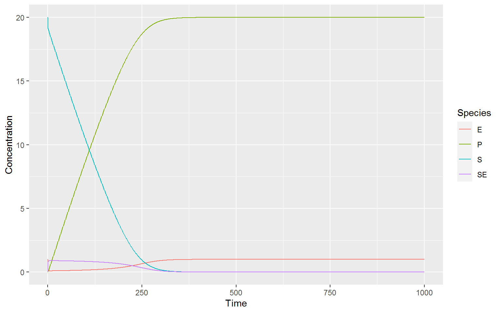
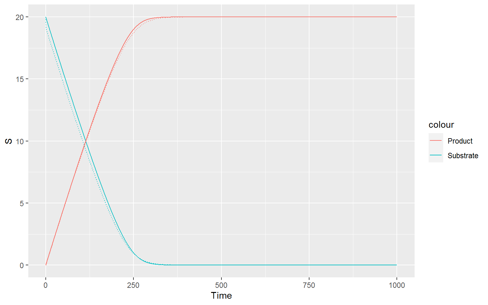

The code in this teaching document uses the R packages CoRC and tidyverse. Make sure they are installed before beginning.
library(CoRC)
library(tidyverse)Michaelis-Menten-Kinetics, introduced by Leonor Michaelis and Maud Menten1 is a popular model of enzyme kinetics.
If you have a substrate \(S\) and product \(P\) and the reaction is catalysed by enzyme \(E\), you can use Michaelis-Menten-Kinetics to discribe this process. The rate of formation of the product (\(v\)) is given by
\[ v = \frac{V_{max} * [S]}{K_M + [S]} \] with \(V_{max}\) as the maximum rate of product formation (at saturating substrate concentration) and \(K_M\) the value of the Michaelis-Constant.
Michaelis-Menten kinetics follow the assumtion that enzyme-catalysed reaction follow a two step process \[ S + E \rightleftharpoons SE \rightarrow E + P \] where the substrate and the enzyme reversibly form a complex \(SE\) (with parameters \(k_f\) and \(k_r\) for forward and reverse reactions) which then catalyses the formation of the product and the release of the enzyme (with reaction parameter \(k_{cat}\)).
In this model, all our reaction follow Mass-action kinetics where the reaction rate is proportional to the concentration of the substrates.
We can denote our reaction rates for the two reaction as following:
1.) \(k_f*([S]+[E]) - k_r*[SE]\)
2.) \(k_{cat}*[SE]\)
We can form 4 differential equations of the change of our species over time:
\[\frac{d[S]}{dt} = - k_f[S][E] + k_r[SE]\] \[\frac{d[E]}{dt} = -k_f[S][E] + k_r[SE] + k_{cat}[SE]\] \[\frac{d[ES]}{dt} = k_f[S][E] - k_r[SE] - k_{cat}[SE] \] \[\frac{d[P]}{dt} = k_{cat}[SE]\]
Another important assumtion is, that the concentration of the substrate is much higher than the concentration of the enzyme.
We can visualize this model using CoRC:
First, we have to create a new model
newModel()
#> # A COPASI model reference:
#> Model name: "New Model"
#> Number of compartments: 0
#> Number of species: 0
#> Number of reactions: 0
setModelName("Manual Michaelis Menten")Next, we can put in our reactions. Species that are called in the reaction creation and not yet part of the model, will be added automatically. We can denote reversible reactions with an “=” sign, and non-reversible reactions with an arrow “->”. Hint: Make sure that all species and operators are separated by a space, otherwise CoRC will not see them as different species/things.
newReaction("S + E = SE")
#> [1] "(S + E = SE)"
newReaction("SE -> P + E")
#> [1] "(SE -> P + E)"We will now take a look at the species and the reactions in our model.
getSpecies()
#> # A tibble: 4 x 13
#> key name compartment type unit initial_concent~
#> <chr> <chr> <chr> <chr> <chr> <dbl>
#> 1 E{co~ E compartment reac~ mol/l 1
#> 2 S{co~ S compartment reac~ mol/l 1
#> 3 SE{c~ SE compartment reac~ mol/l 1
#> 4 P{co~ P compartment reac~ mol/l 1
#> # ... with 7 more variables: initial_number <dbl>,
#> # concentration <dbl>, number <dbl>, rate <dbl>,
#> # number_rate <dbl>, initial_expression <chr>,
#> # expression <chr>
getReactions()
#> # A tibble: 2 x 6
#> key name reaction rate_law flux number_flux
#> <chr> <chr> <chr> <chr> <dbl> <dbl>
#> 1 (S + E~ S + E ~ S + E =~ FunctionDB.Fun~ 0 0
#> 2 (SE ->~ SE -> ~ SE -> P~ FunctionDB.Fun~ 0 0
getReactions()$rate_law
#> [1] "FunctionDB.Functions[Mass action (reversible)]"
#> [2] "FunctionDB.Functions[Mass action (irreversible)]"As you can see, the species in the model all start with a concentration of 1. This obviously does not make sense for our model, because at the beginning, we don’t want there to be any complex or product. Also, we will need to make sure that there is a lot more substrate than complex. The reactions look fine; the rate law is automatically set to Mass Action Kinetics, which is (As you will see below) needed for Michaelis-Menten Kinetics.
setSpecies(key = getSpecies()$key, initial_concentration = c(1,20,0,0))Now, we want to know how our model behaves. For this, we will simulate how our species interact with each other in a time course. The runTimeCouse() command gives us a list with a lot of different aspects, but for now only the “result” section is interesting to us.
timecourse <- runTimeCourse(duration = 1000, dt = 1)$resultWe will now need to reshape the data to make it printable with ggplot.
#Reshape
timecourse <- timecourse %>%
pivot_longer(-Time, values_to = "Concentration", names_to = "Species")
#Plot data
ggplot(data = timecourse, mapping = aes(x = Time, y = Concentration, color = Species))+
geom_line()
There are two ways of deriving the Michaelis-Menten Kinetics from here. The Quasi-Steady-State Assumption and the Equilibirum approximation. You have to keep in mind, that both of these have underlying assumtions that need not nessecarliy be true for your model. Here, we will discuss the Quasi-steady-state assumption further.
The approximation taken in this assumption is, that the concentration of the complex is in steady state (at least in the time scale of product formation that we are interested in). This derivation was proposed by Briggs and Heldane 2 and is a bit more intuitive than the original (below)
So, we assume the concentration of the complex does not change over time. \[\frac{d[ES]}{dt} = k_f[S][E] - k_r[SE] - k_{cat}[SE] = 0 \] We can rearrange this to
\[ k_f[S][E] = k_r[SE] + k_{cat}[SE] = [SE](k_r + k_{cat})\]
We can see that no enzyme is being destroyed in any process of our model. So we can infer that our total enzyme concentration \(E_0\) does not change over time.
\[ [E_0] = [E] + [ES] = constant \] and from this we get \[ [E] = [E_0]-[ES]\] With this, we can solve our expression
\[k_f[S][E] = [ES](k_r + k_{cat}) \] by inserting it into this formula:
\[k_f[S]*([E_0]-[ES]) = [ES](k_r + k_{cat}) \] \[k_f[S][E_0] - k_f[S][ES] = [ES](k_r + k_{cat}) \] \[k_f[S][E_0] = [ES](k_r + k_{cat} + k_f[S])\] \[[ES] = \frac{k_f[S][E_0]}{k_r + k_{cat} + k_f[S]}\] We can use a trick and multiply \(k_f\) out in the denominator to get rid of \(k_f\) in the numerator \[[ES]= \frac{k_f[S][E_0]}{k_f(\frac{k_r+k_{cat}}{k_f}+[S])}\] \[[ES]= \frac{[S][E_0]}{(\frac{k_r+k_{cat}}{k_f}+[S])}\] Now, to make it nicer to look at, we will define: \[ \frac{k_r + k_{cat}}{k_f} = K_M \] Our equation now looks already very similar to the Michaelis-Menten-Kinetics \[[ES] = \frac{[S][E_0]}{K_M + [S]}\]
What we now want is the velocity of the product formation: \[v = \frac{d[P]}{dt} = k_{cat}[ES] \] We can insert what we derived about the \([ES]\) in the second to last equation: \[ v = k_{cat} * \frac{[S][E_0]}{K_M + [S]} \] Now, we can say, that if all available enzyme was creating the product at the same time (\([E_0] * k_{cat}\)), we would have the maximum velocity (\(V_{max}\)) of this reaction. So we can define:
\[ V_{max} = [E_0]*k_{cat} \]
Finally, when we insert this in our reaction velocity, we get the Michaelis-Menten Reaction kinetics:
\[v = \frac{V_{max}[S]}{K_M + [S]} \]
Alternatively, we can reach these kinetics by applying an Equilibrium approximation, where we assume that the substrate is in chemical equilibrium with the complex. This was the original derivation from Leonor Michaelis and Maud Menten. We assume that the forward reaction is equal to the backwards reaction:
\[k_f[S][E] = k_r[SE]\] The derivation of the Michaelis-Menten kinetics from this is similar to above, so we will not do that.
Now, we want to show how our Michaelis-Menten-Kinetics work. For this, we will plot the substrate and product concentration of our model next to the substrate and product concentration of a model with inbuilt Michaelis-Menten-Kinetics that looks like this:
\[ S \rightarrow P \] We will first save our current model with a variable and then make a new model:
manualMM <- getCurrentModel()
newModel()
#> # A COPASI model reference:
#> Model name: "New Model"
#> Number of compartments: 0
#> Number of species: 0
#> Number of reactions: 0
setModelName("Inbuilt Michaelis Menten")We only need one reaction, but we need to set our rate law to “Michaelis-Menten”.
newReaction("S -> P", fun = "Michaelis-Menten (irreversible)")
#> [1] "(S -> P)"
inbuiltMM <- getCurrentModel()We need to make sure that our models have the same parameters so that they would behave the same, if they are the same. Let us take a look at the parameters:
getParameters(model = manualMM)
#> # A tibble: 3 x 5
#> key name reaction value mapping
#> <chr> <chr> <chr> <dbl> <chr>
#> 1 (S + E = SE).k1 k1 S + E = SE 0.1 <NA>
#> 2 (S + E = SE).k2 k2 S + E = SE 0.1 <NA>
#> 3 (SE -> P + E).k1 k1 SE -> P + E 0.1 <NA>
getParameters(model = inbuiltMM)
#> # A tibble: 2 x 5
#> key name reaction value mapping
#> <chr> <chr> <chr> <dbl> <chr>
#> 1 (S -> P).Km Km S -> P 0.1 <NA>
#> 2 (S -> P).V V S -> P 0.1 <NA>As we can see, our inbuilt reaction still needs some parameters set. The \(K_M\) we can easily set with our formula we derived earlier:
\[K_M = \frac{k_r + k_{cat}}{k_f} \] The parameters in our model correspond to (from top to bottom): \(k_f\), \(k_r\), \(k_{cat}\). All of them are 0.1 so for \(K_M\) we get $K_M = 0.2 / 0.1 = 2 $.
Finding the \(v_{max}\) is a bit more tricky. We defined: \[ V_{max} = [E_0]*k_{cat} \] \(k_{cat}\) is 0.1, as we just found out, but for \(E_0\) we need to take a look at the species in our manual Michaelis Menten Model:
getSpecies(model = manualMM)
#> # A tibble: 4 x 13
#> key name compartment type unit initial_concent~
#> <chr> <chr> <chr> <chr> <chr> <dbl>
#> 1 E{co~ E compartment reac~ mol/l 1
#> 2 S{co~ S compartment reac~ mol/l 20
#> 3 SE{c~ SE compartment reac~ mol/l 0
#> 4 P{co~ P compartment reac~ mol/l 0
#> # ... with 7 more variables: initial_number <dbl>,
#> # concentration <dbl>, number <dbl>, rate <dbl>,
#> # number_rate <dbl>, initial_expression <chr>,
#> # expression <chr>The total enzyme concentration \(E_0\) is defined as
\[ [E_0] = [E] + [SE] = 1 + 0 = 1\] and it follows for \(V_{max}\) \[ V_{max} = [E_0] * k_{cat} = 1 * 0.1 = 0.1 \] We can set these parameters for our inbuilt Michalis Menten model, as well as set the species starting concentration so that they are the same as for the manual model:
setParameters(model = inbuiltMM, key = getParameters(model = inbuiltMM)$key, value = c(2, 0.1))
setSpecies(model = inbuiltMM, key = getSpecies(model = inbuiltMM)$key, initial_concentration = c(0,20))Now, we can run a time course for both models:
manualTC <- runTimeCourse(duration = 1000, dt = 0.1, model = manualMM)$result
inbuiltTC <- runTimeCourse(duration = 1000, dt = 0.1, model = inbuiltMM)$resultand plot the product and the substrate over time:
ggplot(mapping = aes(x = Time))+
geom_line(data = inbuiltTC, mapping = aes(y = S, color = "Substrate"))+
geom_line(data = inbuiltTC, mapping = aes(y = P, color = "Product")) +
geom_line(data = manualTC, mapping = aes(y = S, color = "Substrate"), linetype = "dotted")+
geom_line(data = manualTC, mapping = aes(y = P, color = "Product"), linetype = "dotted") As you can see, the dotted (for manual) and the normal line vary slightly, but they are very similar.
We have seen, that the Michaelis-Menten Kinetics do not apply to every reaction in every model. From the assumptions that are in the Michaelis-Menten Kinetics, we can see which reactions will not be modeled well, if you applied them.
The Reaction is not catalyzed by an enzyme. This seems straightforward, but it is something to keep in mind. You need to have one species in your reaction that is needed for the reaction but does not change during the reaction.
The concentration of the enzyme changes over time. Keep in mind, that we assumed that \(E_0\) (the total enzyme concentration) does not change over time. We need that assumption, and if it is not true, our model will not describe reality very well, if we still used Michaelis-Menten Kinetics
The concentration of the complex is not in Steady State / The substrate is not in equilibrium with the complex This is the basis for the Quasi-Steady-State and Equilibrium assumption. If this assumption is not true, we will not be able to model our reaction using Michaelis-Menten-Kinetics.
Our reaction is not $ S + E SE E + P $ Again, this seems really straightforward, but there are a lot of reactions that will not be described with this basis. What would happen, if you needed a helper binding to the enzyme for the substrate to bind? Or if you have two substrates, where one first binds to the enzyme and then the other? Or, very likely, the substrate to product reaction is not irreversible?
We can expand our reaction kinetics in a lot of ways. We will now find the “Michaelis-Menten-Like” kinetics for the following reaction, where the reaction is reversible:
\[ S + E \rightleftharpoons SE \rightleftharpoons E + P \] with parameters \(k_f\) and \(k_r\) for the first reaction and \(k_F\) and \(k_R\) for the second reaction.
Our differential equations will now look the following:
\[\frac{d[S]}{dt} = - k_f[S][E] + k_r[SE]\] \[\frac{d[E]}{dt} = -k_f[S][E] + k_r[SE] + k_{F}[SE] - k_R[E][P]\] \[\frac{d[ES]}{dt} = k_f[S][E] - k_r[SE] - k_{F}[SE] + k_R[E][P] \] \[\frac{d[P]}{dt} = k_{F}[SE] - k_R[E][P]\] We will use the equilibrium assumption, where we assume that the first forward reaction is equal to the first backward reaction:
\[k_f[S][E] = k_r[SE]\] We can again use $E_0 = [E]+[SE] = [E_0] - [SE] $: \[ k_f[S]([E_0]-[SE]) = k_r[SE]\] and move our equations around so we will have a formula for \([SE]\): \[k_f[S][E_0]-k_f[S][SE] = k_r[SE]\] \[\hookrightarrow [SE] = \frac{k_f[S][E_0]}{k_r + k_f[S]}\] We can again multiply out k_f: \[[SE] = \frac{[S][E_0]}{\frac{k_r}{k_f}+[S]}\] Now, we want to know the velocity of the product formation, where the differential equation is: \[v = \frac{d[P]}{dt} = k_{F}[SE] - k_R[E][P]\] We can put in what we found out for the concentration of the complex: \[ v = k_F\frac{[S][E_0]}{\frac{k_r}{k_f}+[S]} -k_R[E][P]\] and now, we have our reaction velocity for reversible Michaelis-Menten Kinetics.
\[ S_1 + E \rightleftharpoons SE \]
\[S_2 + SE \rightleftharpoons SSE \rightarrow E + P \] With parameters \(k_{f1}\) for forward and \(k_{r1}\) for backwards for the first reversible reaction and \(k_{f2}\) and \(k_{r2}\) for the second, and \(k_{cat}\) for the formation of the product. We can formulate the following differential equations:
\[ \frac{dS_1}{dt} = - k_{f1}[S_1][E] + k_{r1}[SE]\] \[ \frac{dS_2}{dt} = - k_{f2}[S_2][SE] + k_{f1}[S_1][E] + k_{r_2}[SSE]\] \[ \frac{dSE}{dt} = k_{f1}[S_1][E] - k_{f2}[S_2][SE] + k_{r2}[SSE]\] \[ \frac{dSSE}{dt} = k_{f2}[S_2][SE]-k_{r_2}[SSE]-k{cat}[SSE]\] \[ \frac{dP}{dt} = k_{cat}[SSE] \]
\[ \frac{dE}{dt} = -k_{f1}[S_1][E] + k_{cat}[SSE]\]
L. Menten, M. Michaelis, Die Kinetik der Invertinwirkung, Biochem Z49 (333-369) (1913) 5↩︎
George Edward Briggs, John Burdon Sanderson Haldane; A Note on the Kinetics of Enzyme Action. Biochem J 1 January 1925; 19 (2): 338–339. doi: https://doi.org/10.1042/bj0190338↩︎
Dynamic Publication Media with CoRC